03 / CONTENT & ANALYSIS
My work, not just my words.
Tap a post to open the original X post. The analysis layer explains the research, angle and impact.
I turn deep Web3 research into content people actually stop to read — while exploring ecosystems, trading, collaborating and documenting the journey.
This is a living record of what I explore, build, publish and prove.
I started in Web2 in 2021, entered Web3 in 2023, explored markets and protocols, and eventually turned that curiosity into a creator career.
I go deep before I post: understand the product, test the ecosystem, find the interesting angle, then translate it into content that is easy to understand and hard to scroll past.
Projects I explore, contribute to, and create content about.
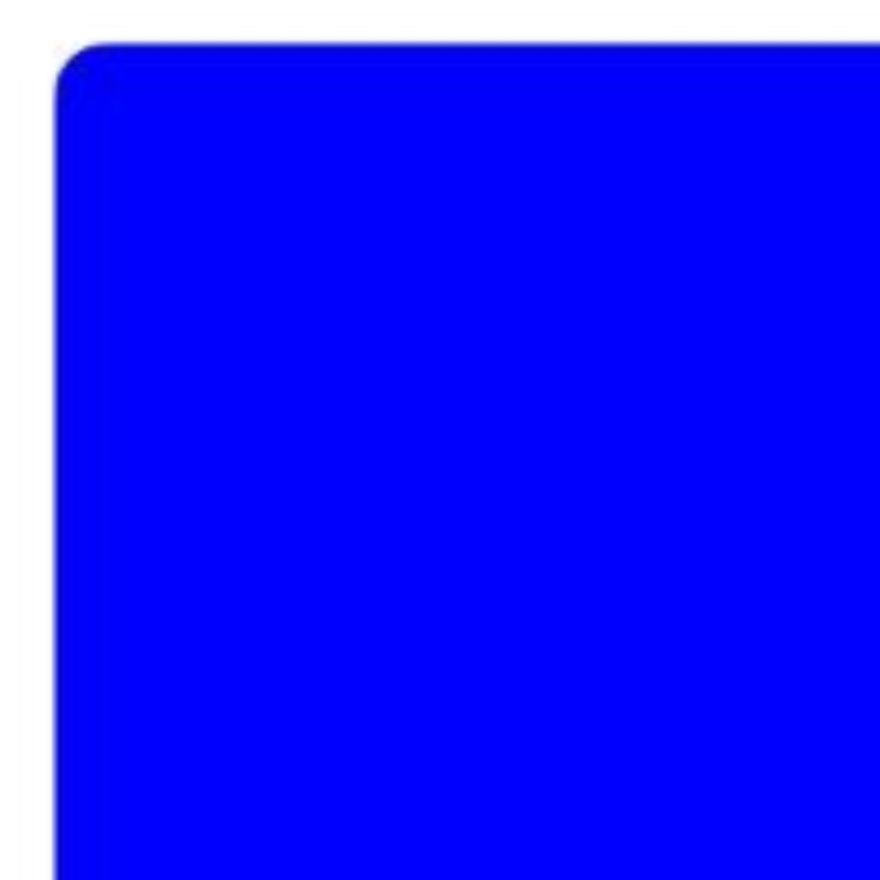
Ecosystem research, narratives and content.
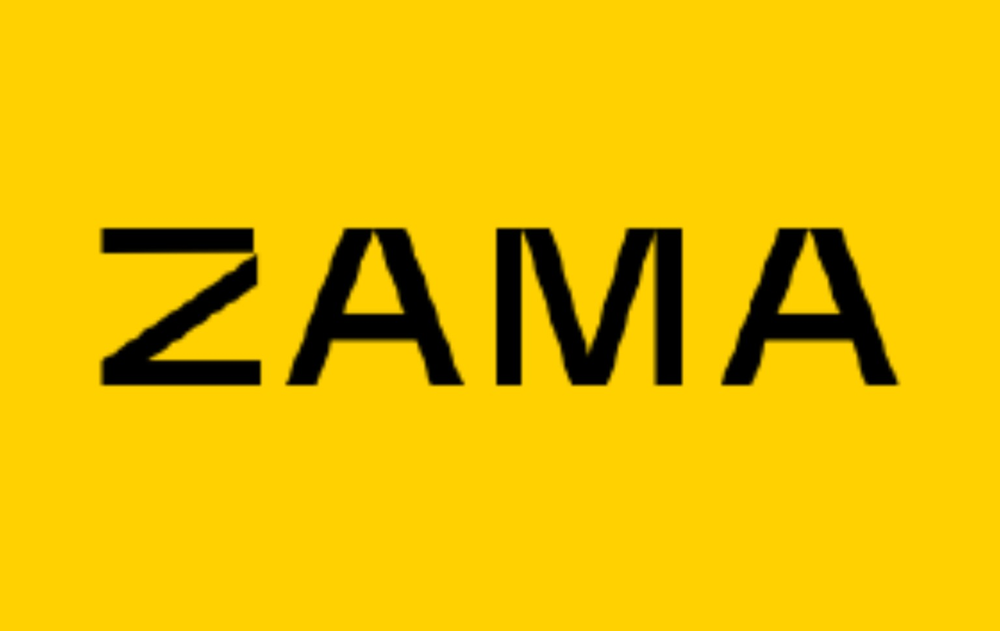
Explored the ecosystem and created multiple posts.
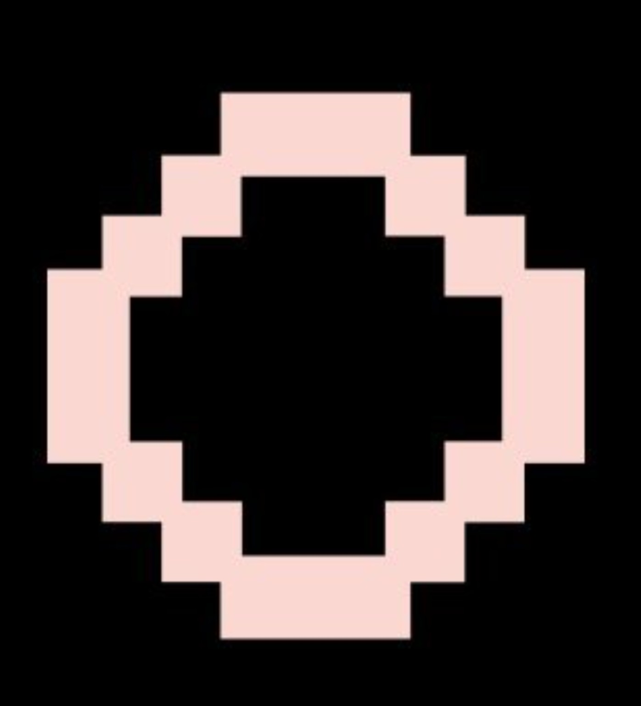
Ran a node and explored the technical side.
Prediction-market research and ecosystem exploration.
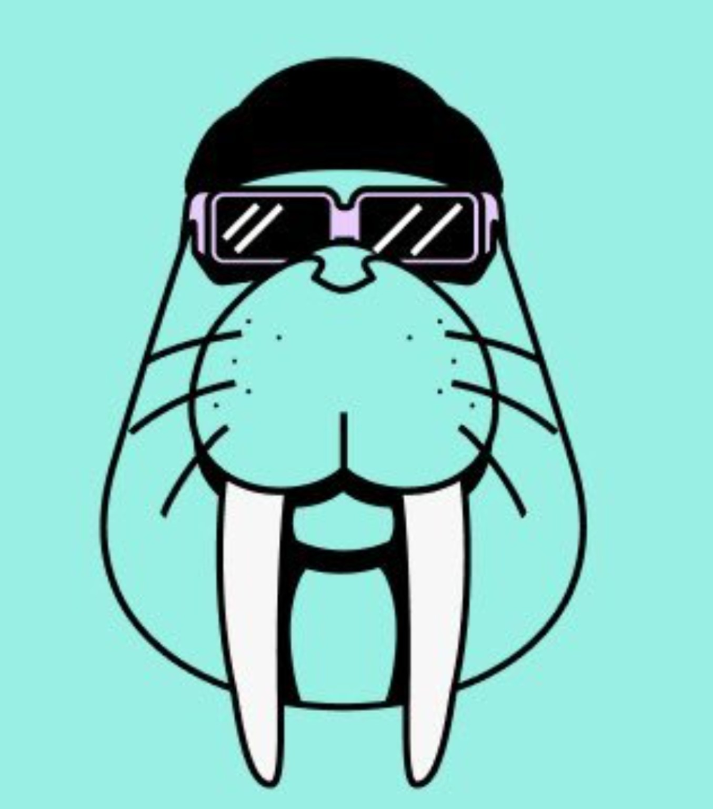
Exploring emerging infrastructure and use cases.
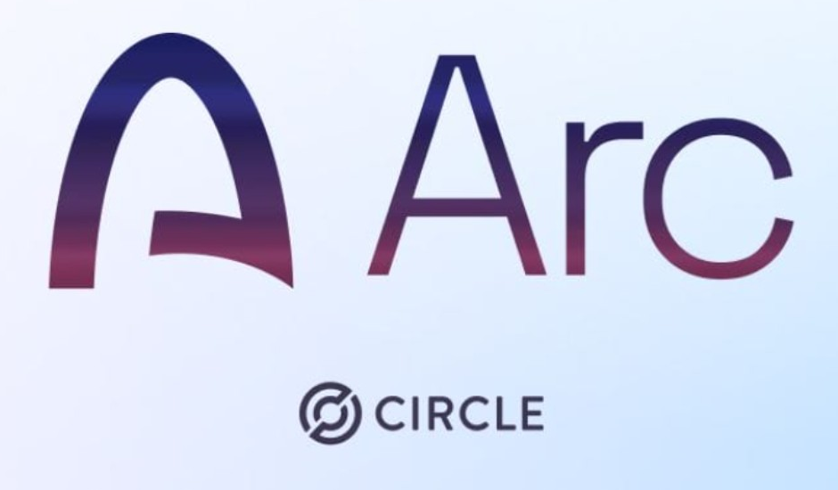
Worked as an Architect in the Arc ecosystem.
Projects I researched, created for, ran infrastructure for, or contributed to.
Tap a post to open the original X post. The analysis layer explains the research, angle and impact.
Selected screenshots, roles and hands-on proof. Tap any receipt to open it larger.
Community contribution, ecosystem exploration and visible participation — backed by the Architect proof below.
View the Architect post on X ↗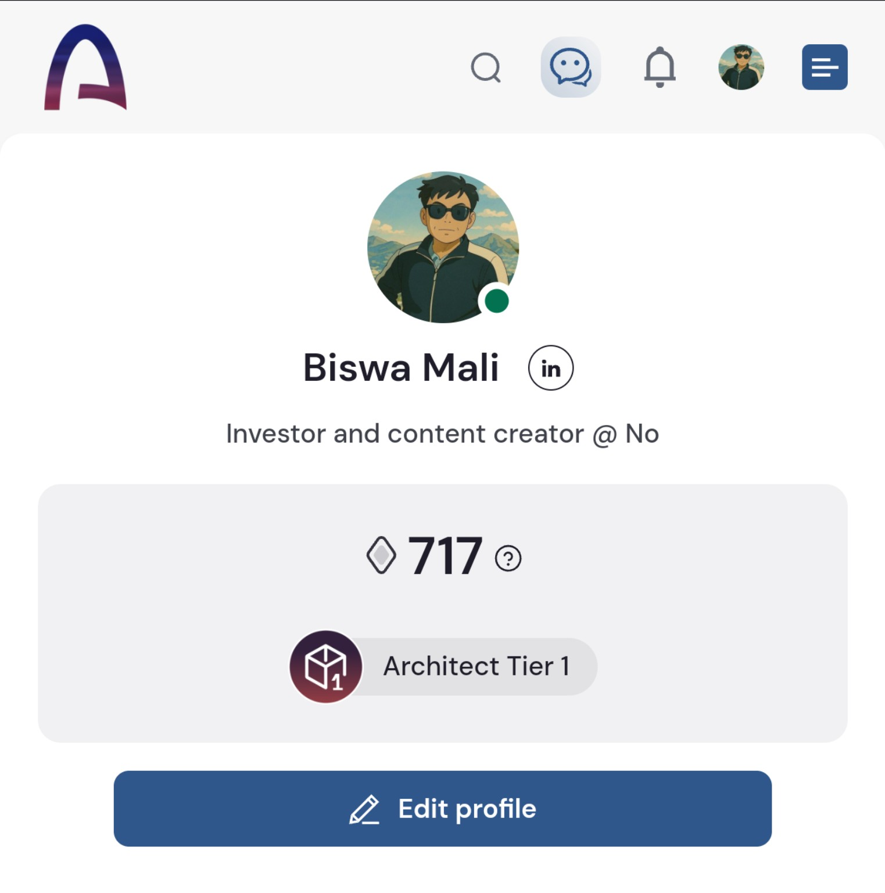
ARCHITECT TIER 1 · PROOF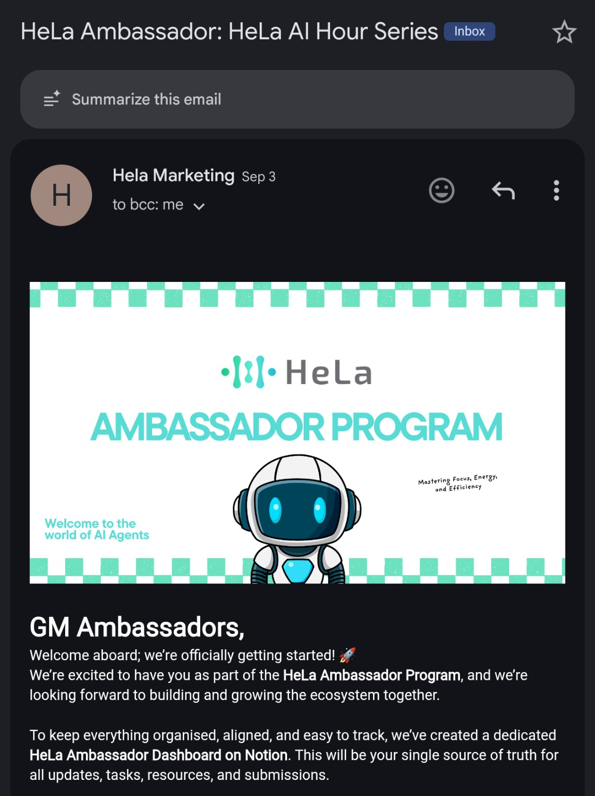
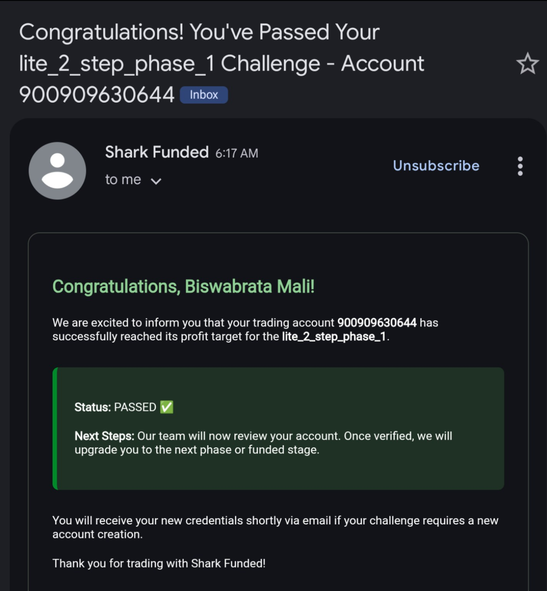
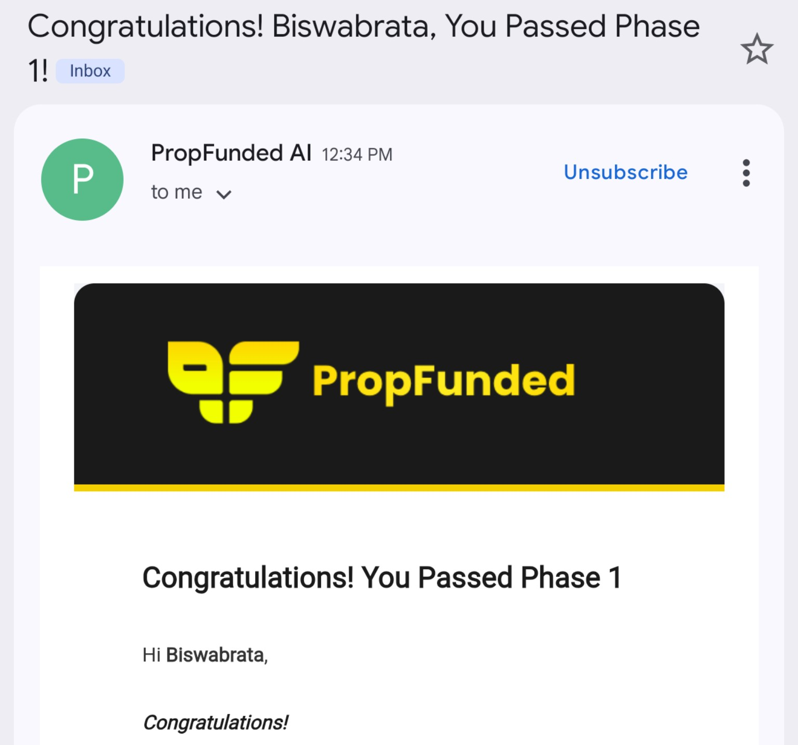
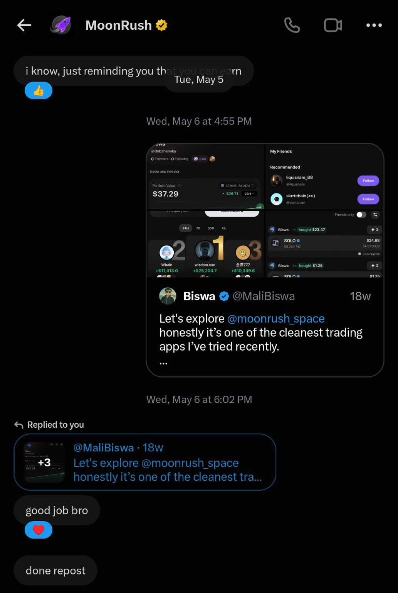
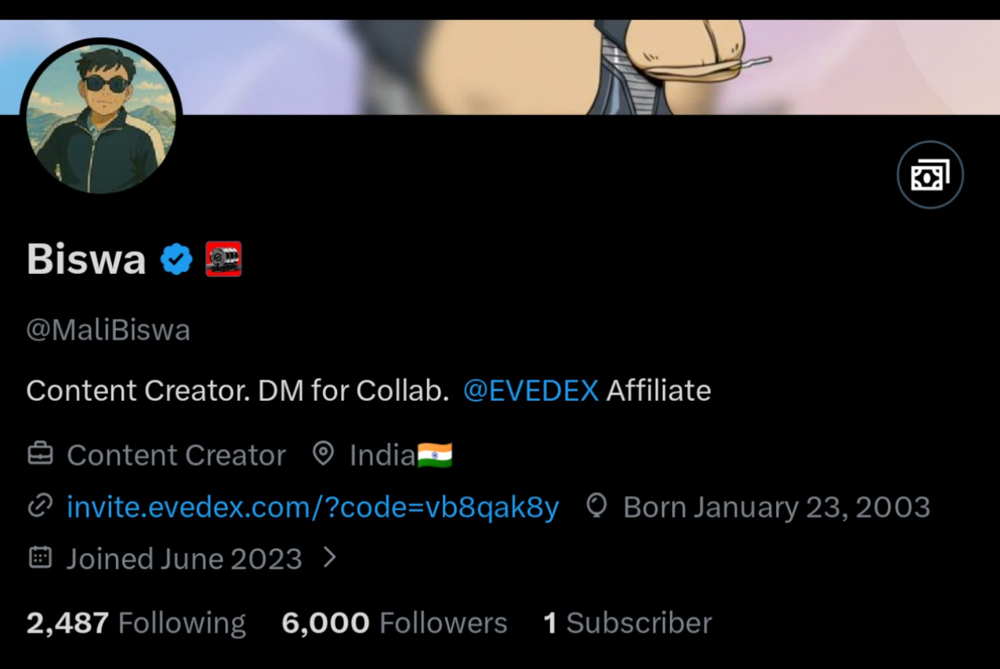
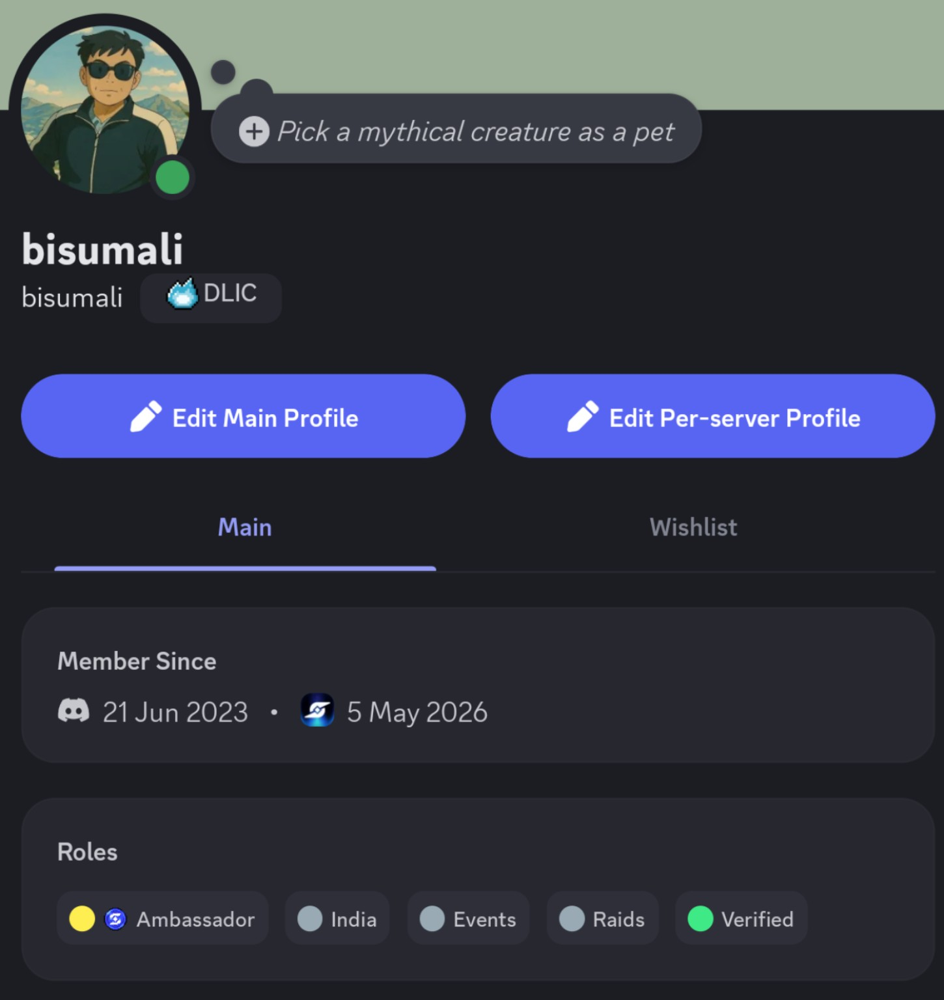
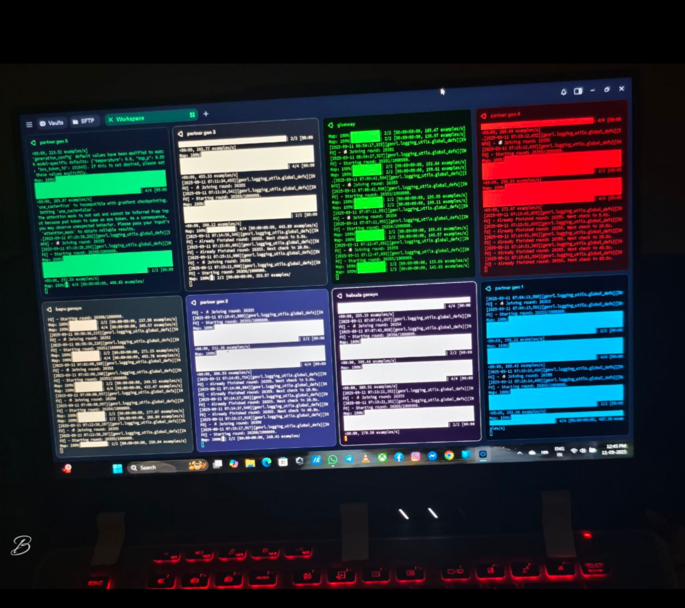
New ecosystems, new narratives, new experiments. The site is meant to grow with the work.
Campaigns, research, ambassador programs, affiliate partnerships or creator collaborations.